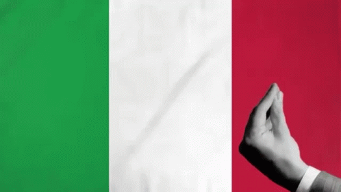
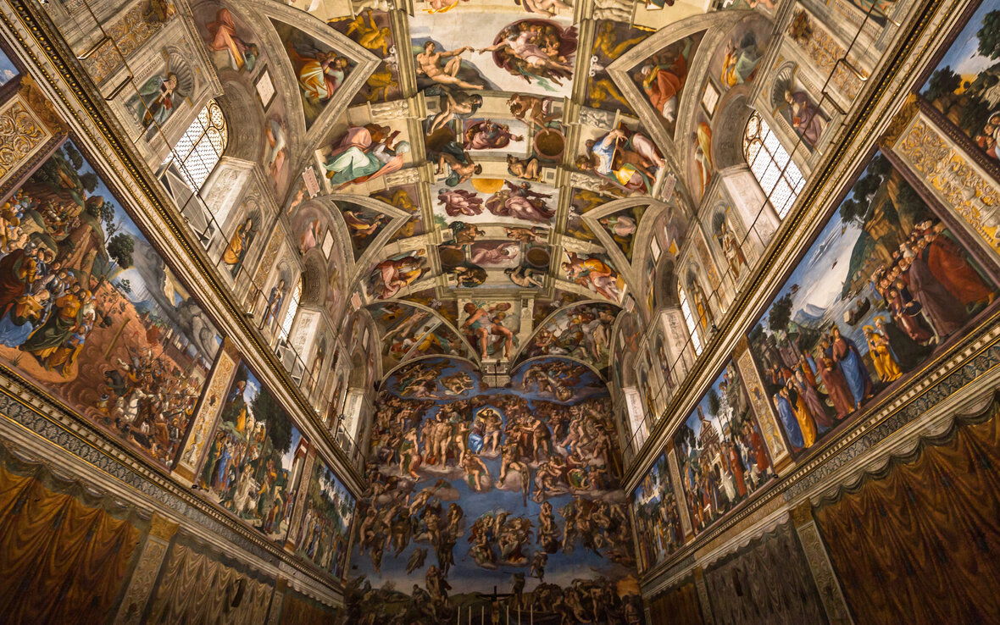
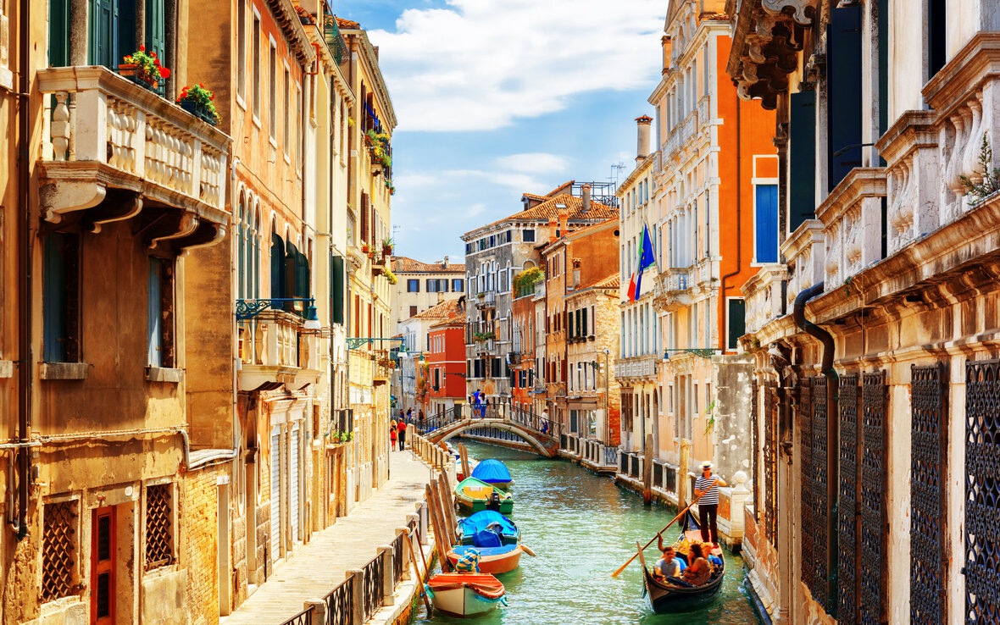
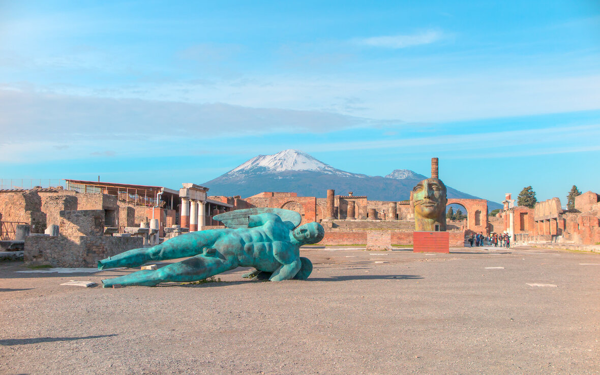

Ponto 3 - Itália

Após desembarcar do avião, iriamos a um hotel em Roma, aonde começa o nosso turismo pelos mais incrÃveis lugares da Itália
ComeçarÃamos com algumas atrações classicas: Coliseu, o Palatino e o Fórum Romano, lugares cheios de história.

No decorrer dos outros dias iriamos visitar outros lugares, como o Vaticano, ir para ver a sua BasÃlica de São Pedro.

Também temos Veneza e os seus incrÃveis canais

Seria muito interressante visitar Pompéia e ver o povo de pedra

E por fim o mais tÃpico de toda Itália, seus incrÃveis pratos clássicos! Além de pratos que nunca vi, gostaria de comer as mesmas comidas que como aqui no Brasil, mas com o estilo italiano, como:
- 🌀 Pizza
- 🌀 Lasagna
- 🌀 Spaghetti
- 🌀 Bistecca alla Fiorentina
- 🌀 Tiramisù
No fim, iriamos partir para o Egito.